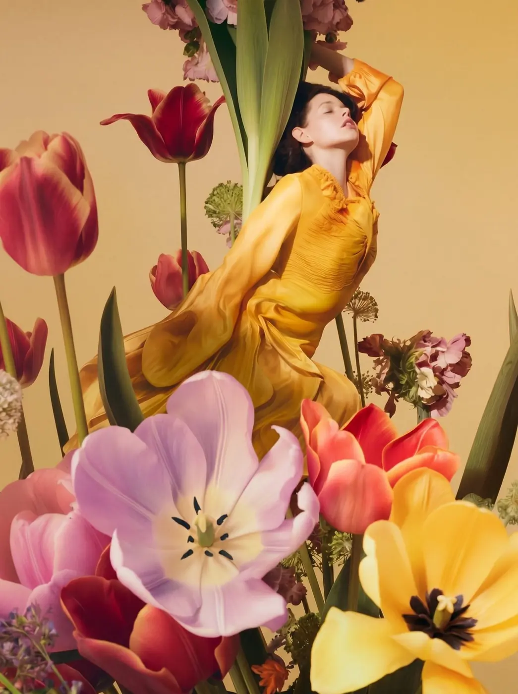
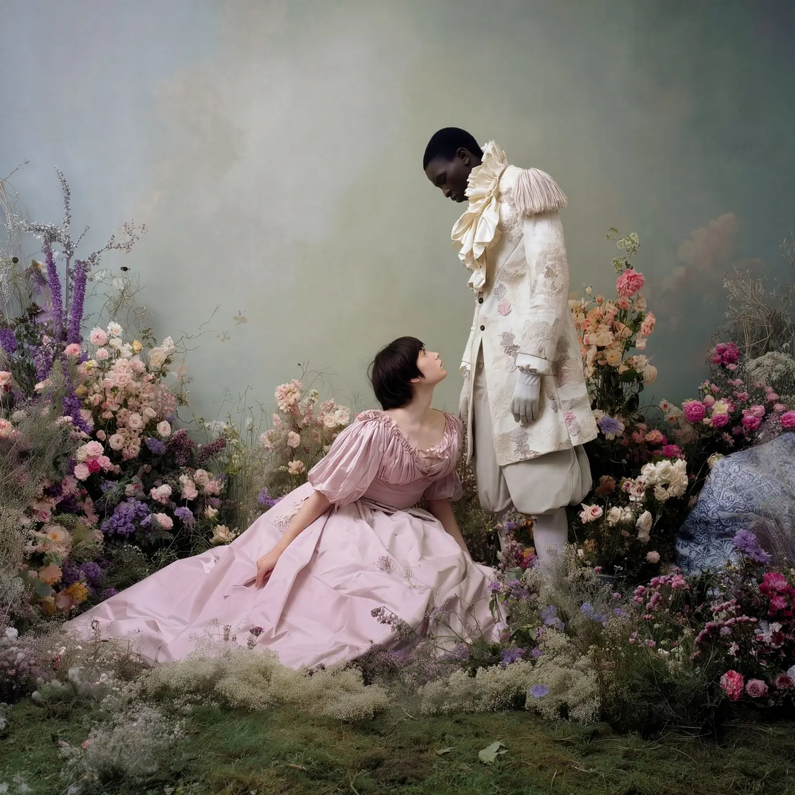
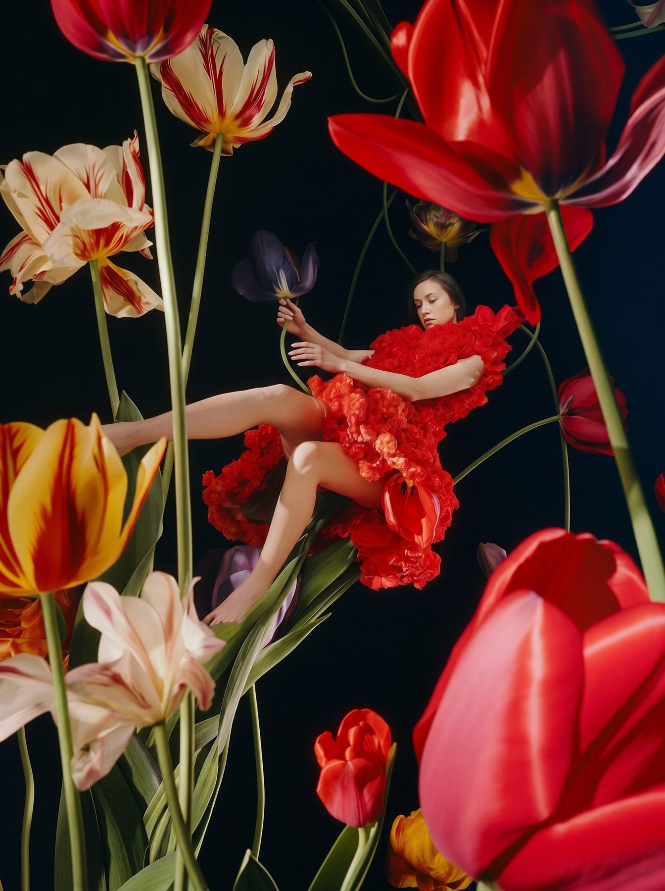

Flowers stand taller than people here. Tulips the size of trees, petals like satin skirts. The heroines do not pick the flowers, they live inside them. One rule in every frame: the person is smaller than the flower.


Staged photography: I invent the story and build the frame.
Discuss a project →Working worldwide, remotely. Invoicing in USD or EUR.